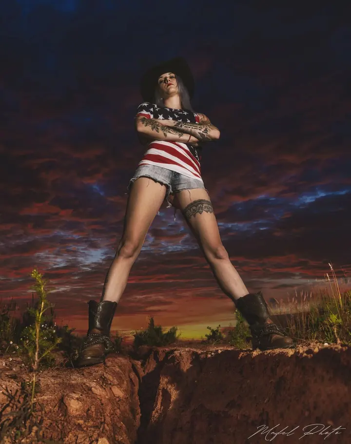
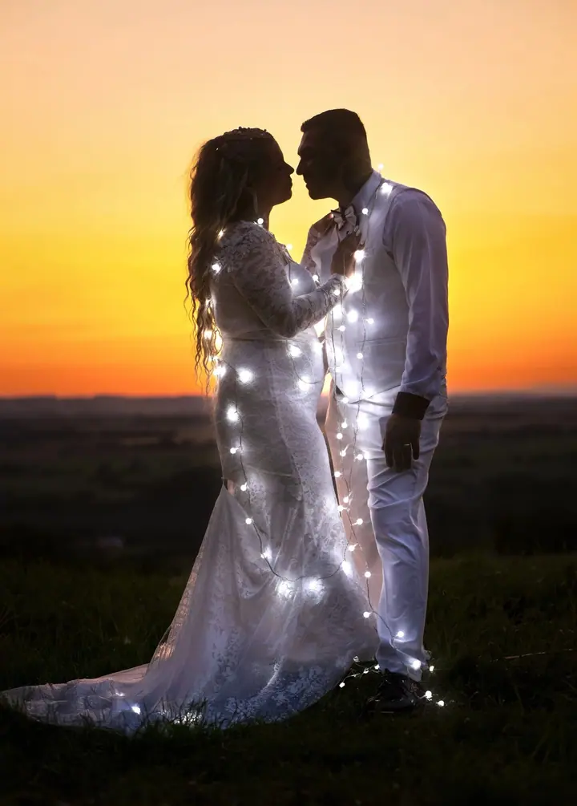
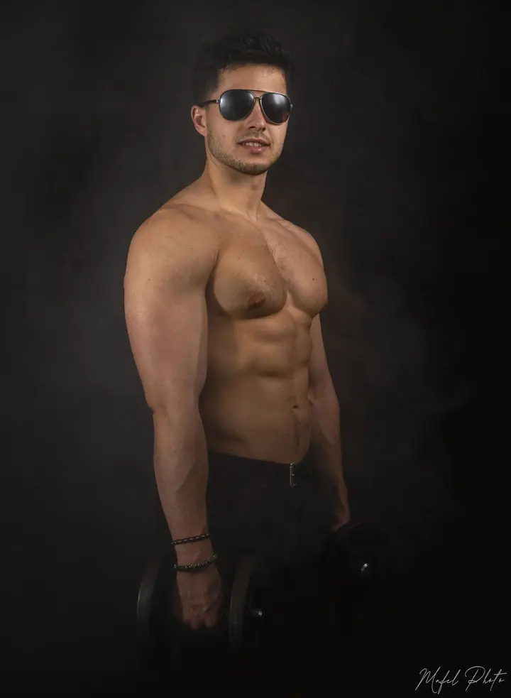
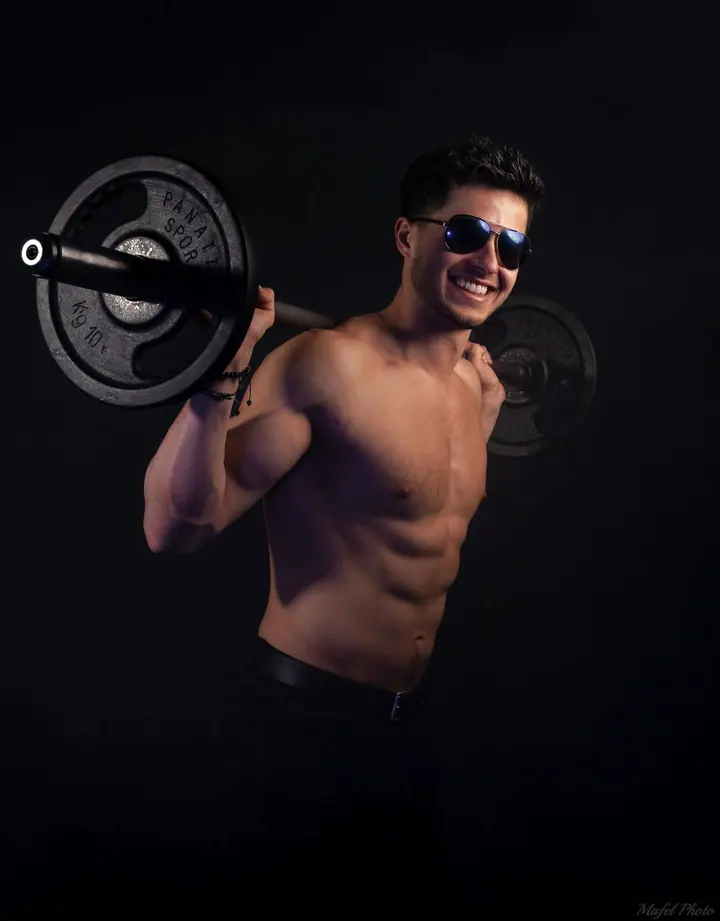
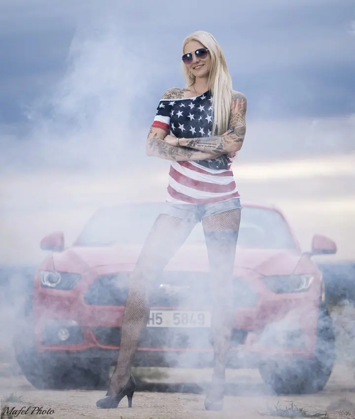
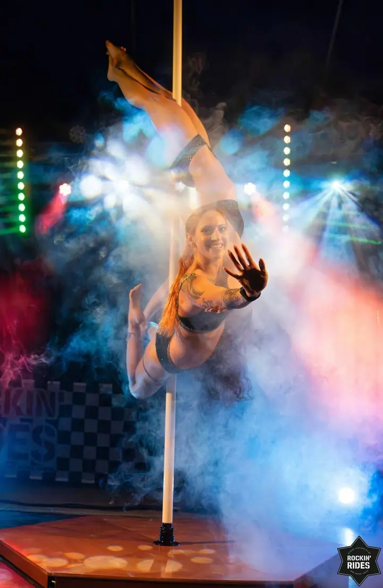
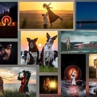

01 / 04
Svatební focení a video
Každá svatba je jiná, a tak k ní i přistupuji. Nafotím nebo natočím jen obřad, nebo celý den od ranních příprav po večerní zábavu, podle toho, co dává smysl vám.
Zeptat se na termín→





Fotím atmosféru, energii a skutečné momenty
Zeptat se na termín →(01) Ahoj
Jmenuji se Martin Felcman a pod značkou Mafel Photo fotím a natáčím ve východních Čechách. Od svateb přes koncerty a festivaly až po portréty v mlze nebo ve zlaté hodince . Ke každé zakázce přistupuji individuálně, ať jde o komorní chvíli, nebo velkou akci.
(02) Co fotím
01 / 04
Každá svatba je jiná, a tak k ní i přistupuji. Nafotím nebo natočím jen obřad, nebo celý den od ranních příprav po večerní zábavu, podle toho, co dává smysl vám.
Zeptat se na termín→02 / 04
Fotím všechny hudební žánry, od krátkého koncertu v klubu po celodenní festival, a sportovní akce od rally a motorek po běžecké závody. Zajímá mě dění na pódiu i atmosféra, publikum a detaily kolem.
Zeptat se na termín→03 / 04
Portrétní focení beru jako pohodové setkání bez zbytečného stresu, nejraději ve zlaté hodince nebo při západu slunce. Na přání přivezu výrobník mlhy pro výraznější atmosféru.
Zeptat se na termín→Dále nabízím
Psy, kočky i jezdce s koňmi fotím venku v přirozeném prostředí, kde jsou uvolnění a hraví. Chci, aby na fotkách byla vidět jejich pravá povaha.
↗(04) Postup
Od první zprávy po hotovou galerii.
Krok 1 z 4
Napište mi nebo zavolejte a nezávazně se zeptejte na cokoliv. Společně najdeme řešení, které vám sedne.
Krok 2 z 4
Domluvíme se, co a jak dlouho budu fotit nebo natáčet, třeba jen obřad, nebo celý den. U portrétů vybereme místo a čas s nejlepším světlem.
Krok 3 z 4
Fotím v klidu a bez stresu, abyste se mohli soustředit na sebe a na svůj den. Pracuji s přirozeným světlem a na přání i s mlhou.
Krok 4 z 4
Vybrané fotky pečlivě upravím a předám v plném rozlišení v digitální podobě, po domluvě i jako tištěné fotografie. U důležitých akcí nabízím expresní dodání.
Nejraději fotím ve zlaté hodince a po setmění
(05) Za objektivem
Pocházím z Kostelce nad Orlicí a fotím hlavně v Královéhradeckém a Pardubickém kraji, nejčastěji v Hradci Králové, Pardubicích, Rychnově nad Kněžnou a okolí. Fotografii a videu se věnuji přes 8 let a jsem multižánrový. Fotím svatby, rodiny a páry, děti, domácí mazlíčky, koně i hudební a sportovní akce.
Nejraději pracuji s přirozeným světlem a atmosférou, ať je to západ slunce, mlha, nebo noc pod hvězdami. Věnuji se i noční luminografii, kde s dlouhou expozicí vznikají snímky, které působí trochu pohádkově. Poslední dva roky pořádám výstavy fotoobrazů, zatím ve Vamberku, Častolovicích a Kostelci nad Orlicí, a další města budou následovat.
Fotky se snažím dodávat co nejrychleji, i když kvalitní úprava potřebuje svůj čas. U důležitých akcí nabízím expresní dodání druhý den, a když je potřeba, zpracuji fotky pro vaše sociální sítě ještě během akce.

Martin
Martin Felcman · Fotograf a kameraman z východních Čech
Hlavně ve východních Čechách, v Královéhradeckém a Pardubickém kraji, nejčastěji v Hradci Králové, Pardubicích, Rychnově nad Kněžnou a okolí.
Mini balíček se 3 hodinami focení a 70 upravenými fotkami stojí 6 000 Kč, Standart se 6 hodinami a 200 fotkami 11 000 Kč a Premium s 12 hodinami a 500 fotkami 19 000 Kč.
Ano. Video ve filmovém stylu má stejný rozsah i cenu jako focení, od 6 000 Kč za 3 hodiny natáčení po 19 000 Kč za celý den.
Co nejrychleji, i když kvalitní úprava potřebuje svůj čas. U důležitých akcí můžu fotky dodat druhý den nebo je zpracovávat pro sociální sítě přímo během akce.
(07) Kontakt
Napište pár vět o tom, co si představujete, a termín, který se vám hodí.